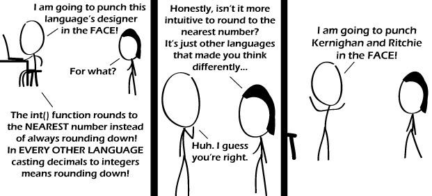

Comic JK 572
When I Feel Like It
⇤
<
?
>
⇥

⇤
<
?
>
⇥
Forum
.
RSS
.
Digg
.
Facebook
.
Reddit
.
Twitter
.
Stumbleupon
Enter your thoughts on number 572.9 here. Please, no spamming, trolling, evaluating int(0.5), or changing the fpu's rounding mode before calling assumption-ridden library functions. Your mother designed a language which always rounds up. We're trained to round from elementary-school arithmetic onwards (and it makes sense in terms of decimal approximations), but having the int() constructor take the integral part of a float (as opposed to the fractional part) seems like an equally intuitive notion to me. >It synergizes well with array indices starting from zero > Rounding shouldn't happen automatically in languages at all. You should have to call round(), floor(), or ceil(), or set a default yourself. >> #define round(x) (int)(x + 0.5) >>Maping to an int should therefore not do any conversion, and thus when done on a float you should just get some massive number that would be the int if it was an int not a float. >>> you mean like float y; int x = *(int*)&y; by default? why would that be a good idea in any high-level language? >>>>Casting a float to an int should throw an exception if there is a fractional part. If you care about the rounding direction, be more explicit in your code. Some day, you're going to have to reread that code. Or gasp, somebody else. Think of your fellow man. Hey look! There's something flying over my head. Is it the Geminid meteor shower that's going on tonight? Wait no, it's just this webcomic. >int() doesn't 'round down', it takes the integer part. What's the value of int(-7.6)? >>Don't be so negative >> -7. 6 is removed becaust 7 decimated it. >>This is why there's INT(), FIX() and CINT(). INT() rounds down, FIX() rounds up and CINT() rounds to the nearest number. >>>wtf language are those from? >>>>Argh! BASIC outbreak! Notify the CDC! Quarantine! Quarantine! The guy in the comic could still emulate the old function by writing a new int method that subtracts.5 if the number is more than zero and adds .5 if it's less than zero, than taking the "int" of the result > That only works if the tie-breaking method for rounding is "round half away from zero". Floating point processors in computers tend to default to "round half to even" (where x.5 is rounded up or down so that the result is always an even number) which would be harder to account for (but is better). And what if the language doesn't specify, but just relies on the rounding mode currently set for the cpu? Panic will ensue! it's all because of binary >Because rounding _never_ happens in decimal.